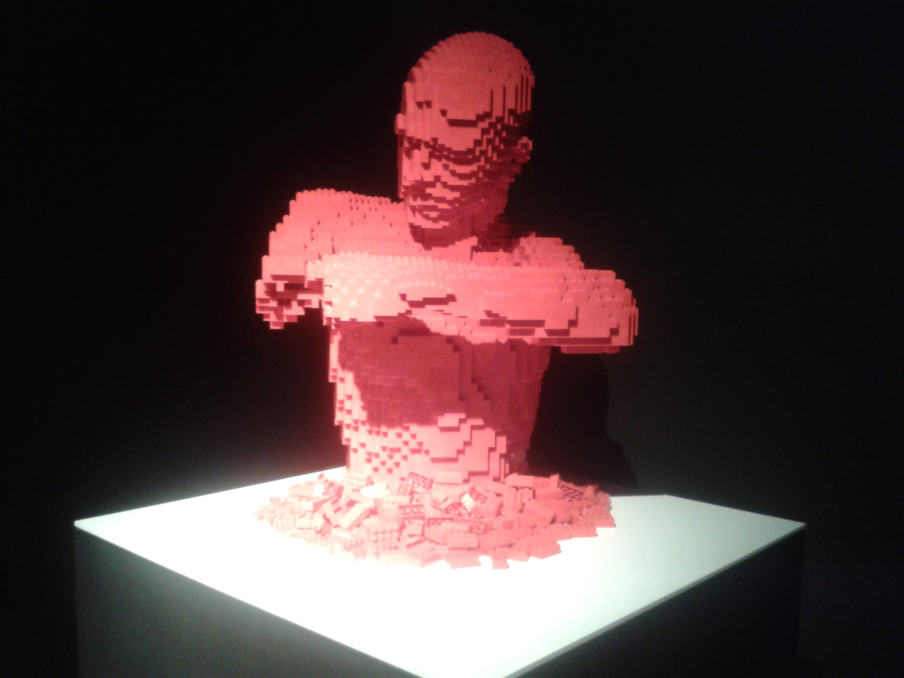

peace.
rest in peace
Respect your fucking craft. Widows and orphans are terrible fucking tragedies, both in real life and definitely in typography. When you sit down to work, external critics aren’t the enemy. It’s you who you must to fight against to do great fucking work.